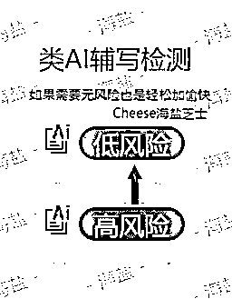
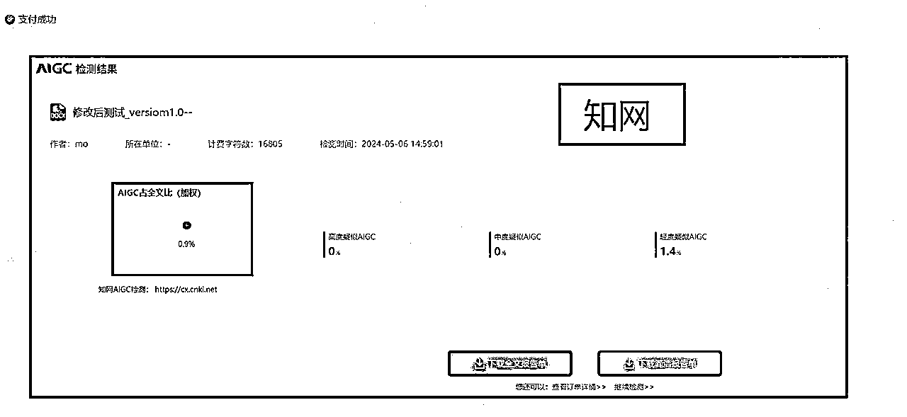
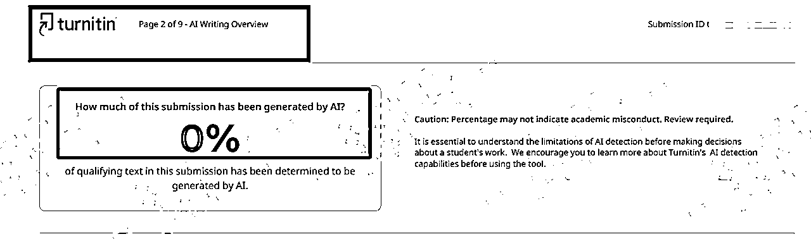

来源：https://atbs4xk1uw.feishu.cn/docx/Qeabd1QB8o1MZbxk5qDcbwrUnhg
版本号：v3.01
更新时间：2024.07.24
操作人员：
更新条目：
收录于 AI写作变现教程 合集
写lw的宝子，今年一定都会遇到一个非常恶心的要求：
Teacher：张三！！！ 你的lw，在xx平台的AIGC检测率为60%，不符合AIGC率<15%的学术要求，务必处理！否则取消学位！
Student：我明明是手写的啊！oh! shit! what should i do?
本教程将详细介绍综合运用技术、策略和创新思维，有效地提高文章内容的原创性，同时规避AIGC检测工具的识别和误判
利用深度学习技术来增强文本的语言多样性和复杂性，包括利用自然语言处理中的高级技巧，如语义增强和句法变换，保持内容的独特性和丰富性
从反深度学习算法角度通过优化提示词来规划内容的结构、论证的逻辑性以及信息的展示方式，使之更符合人类作者的思维模式
通过本教程的学习，将能够有效提升自己的lw质量，使其在众多检测工具的检验中更具隐蔽性，达到....
咔！编不下去了.....
目前（2024-04），
全球算法工程师都没搞明白可以完美针对各个大模型的AIGC检测算法
AIGC检测这个事就很伪需求，我写作的语气和手法恰好和GPT口吻相似，你说我是人写的，还是AI写的？？？目前，AIGC检测的误判率是很高的
不管是鼎鼎有名的GPTzero，还是国外惯用的turnitin，还是国内知名的知网、维普、格子达......都无法100%准确检测AIGC
比如，海盐将20多年前的国家劳动法上传到知网，知网说有18%的AI率.....要知道，20年前，劳动法开始工作了的时候，AI还在玩泥巴呢....怎么可能是用AI写的？
反之，客观的讲，纯人工写的内容，的确在如知网等检测的AI率，会相对低一些，而AI内容，的确检测出的AI率相对高一些，大量测试后，确实有一些些规律。但是，误判率的确是非常高的！且各个平台的检测效果，可能相差巨大！完全没有标准答案！
新事物的出现，前期就是鱼龙混杂的，规则就算很不完善的
但是有的稿件却被学术界强行要求“格子达平台的AIGC率必须是低风险，否则不合格”，虽然检测不准，但是必须要符合这个“伪需求”！
好啦，不用担心啦~ 经过大量研究测试，海盐只用一个工具就能让你的AIGC率符合任何学术标准！
哈喽大家好，我是全网最接地气的AI实战教程博主，海盐，专为小白而生，专注打造全网最容易上手的AI实战教程
本教程分为必修模块和选修模块，【必修模块】必须全部掌握；【选修模块】直接跳过不影响全部教程最小闭环，学完全部必修教程后，有精力再回头补充选修部分
玩法经过大量测试，值得收藏，反复查阅
🚗只有干货，坐稳发车
全局概览，心中有数
【必修模块】预计耗时5min；【选修模块】预计耗时2min
记得对照左侧目录层级，思路更清晰
被检测出很高AI率，很无语，但必须要过AIGC率
被检测出AI，直接蒙圈，那咋整啊，这不是露馅了嘛！过不了就废废了
依旧AI率和血压一起飙高
你这个写手写的AI率60%，客户毕业不了，抓紧给改一下
-> 但被写手拒绝：我就是AI写的，你也不是不知道，别跟我扯
你这个客服，好好看看别人怎么派单的！人家需要降AI率，都会提前说明，你现在说是什么意思？我接单的时候，没有这个要求！你的客户没说不能用AI！
-> 但被客服拒绝：你傻吗？我能事先直接文客户能不能用AI吗？直接和客户说我们是AI写的吗？我连问都不敢问啊....你要是解决不了，客户跑单了，我们谁都没钱！
“姐姐，可以做降AI率嘛？呜呜呜....在别人家做的，我用paperpass检测AIGC率60%，他不给我改，还把我拉黑了”
-> 海盐：交给我吧，包过！
23年8月，官方出台政策，用AI写lw被视为学术不duan，取消学位证
-> 当时，海盐就开始调研各种AI检测工具，发现某宝和全网各处，连个正经的AI检测工具都没有，也就Gptzero算主流，还不准。知网等国内网站，都没有AIGC检测功能
24年3月，海盐遇到了第一个降AI率的客户需求，此时，知网、龙源等官方已经有了AIGC检测功能、但是某宝某鱼上依旧没有便宜的检测账号
-> 说明，检测需求很小。只能自己充值
24年4月，某宝上大量的AIGC检测账号上架，伴随着海盐很多客户有了检测AI的需求
AI检测对坑，势不可挡！
底层逻辑1：目前（2024-04-29），地球上没有任何一个技术可以100%准确的检测AIGC率，即，没有任何一个平台的检测是准确的，各个平台的检测效果差很多
【客户需求】：
我用paperpass检测了你们的lw，AIGC率60%，你们是AI写的吗？这肯定不行的
【写作项目客服话术】：
宝子，是这样的，目前全球AIGC检测技术都是不成熟的，误判率非常高，所以你用paperpass检测也是不准的，没有可信度。AIGC我们只能针对具体平台给你降。虽然都不准，但是为了满足你学校要求，我们会给你做，让你通过
建议，等学校要求具体用哪个平台，具体的AI率降到多少时（和查重率要求是一回事，比如，学校要求知网平台、AI率15%以下），你拿着知网检测结果假设AI率30%，那不合格，来找我们降，我们只能根据已检测的结果针对性的去降，基本降1-2次就OK了，如果检测平台是付费的，由客户出哈，一般学校可能会给几次免费检测机会的
如果学校没有AIGC具体要求，就不需要关注哈
底层逻辑2：目前（2024-04-15），业内能做降AI率的屈指可数，经过调研，仅有的几家基本都是不包过的，常见的50R/千字，60R/千字，还有开出170R/千字天价的，也有忙乎半天15R/千字的
【运营动作】
闲鱼等运营平台上架降AIGC的单品（细节：搜索“AI降”关键字，找首页竞品对标，注意每天的首页都会变，只看首页就OK，是官方推荐的，安全度相对高，第2页都不要看！一比一精细化模仿即可，千万不要自己改关键词，容易违规）
定价200-280一份（细节：经海盐市场验证，降lw的AIGC率，280R以下一份很好成交，超过300能接受的客户会少很多。别家按字数收费，我们直接打包按份卖！省下了细节沟通，无差别接单！效率更高，因为改写成本超级低！）
基本需要1-2次修改，包改包过，如为付费检测平台，由客户负责检测（使用学校的免费机会，或检测费用客户报销）
不会运营的写手宝子，直接去淘宝店铺应聘写手接单、或在淘宝、闲鱼、小红书同行的宝贝下，评论截流！（一比一模仿同行截流的评论！）
底层逻辑3：各个AI工具，生成文字内容的算法，都是不同的，也就是底层的大模型都不同，但他们都有一个共性“AI的结构特征非常强”。只有能改变内容的结构，才可以反AIGC检测！
使用传统的降重工具“火龙果写作：https://www.mypitaya.com/”
经大量测试，目前只有火龙果写作，具备改变AI结构的效果，百试百灵
对于字数较少的小段落（4行内）如果AI率高，且内容不重要，就直接删掉此段
因为字数少非常容易降不掉，怎么改写也不容易跑出AI的结构。可能需要多次改写，效果不稳定，性价比不高。删掉就完事了
字数较少的小段落（4行内）如果AI率高，但内容很重要，用AI对此段扩写为500字，本段落的字数多了，再进行降AI率就可以了
强力改写一个段落后，如果发现改动后的字数占比>60%，也就是比一半多一点，大概率是一次就改写成功了
强力改写一个段落后，如果发现改动后的字数占比<50%，也就是不足一半，直接将改写后的内容，再次强力改写一遍，经大量测试，99%的段落，2次改写后，都无法被检测出AI了
如果强力改写的是“文献综述”内容，一定记得对改写后的内容，进行人工处理：将原文的“作者（年份）”这种内容特征copy到改写后段落的对应位置上，并做好脚注
如果改写的是正文内容，且本段落中有脚注，改写后脚注会丢失，一定记得对照原文补上脚注
假设lw全文10000字，一共20个段落，其中有10个段落AI率高高风险，目标是将这10个段落都降到低风险（或无风险）
新建word10.doc文档，将10个AI高风险段落放入word10.doc文档中
If 知网：
使用火龙果“先强力改写一次，再移除AI痕迹一次”10个段落
Else 格子达：
使用火龙果“先强力改写一次，再强力改写一次”10个段落
改写完每个段落后，一定人工快速读一遍，确保大意不能改变，润一下词汇，字数多了删掉
并用上方写的注意事项，自检自查
将含有10个改后段落的word10.doc文档，上传到指定检测平台，进行AIGC检测(细节：检测平台都是按字数算钱的，只检测有问题的段落，成本才最低，可让客户报销，预付款页面截图给客户，客户报销后再进行检测，避免你检测完了客户不认账，如果字数比较少，成本低，自己包了完全OK)
-> 结果：还剩2个段落，有AI率
其实按照海盐的套路，大概率是，一个段落都不剩了
新建word2.doc文档，将2个AI高风险段落放入word2.doc文档中
If 知网：
使用火龙果“先强力改写一次，再移除AI痕迹一次”2个段落
Else 格子达：
使用火龙果“先强力改写一次，再强力改写一次”2个段落
改写完每个段落后，一定人工快速读一遍，确保大意不能改变，润一下词汇，字数多了删掉
并用上方写的注意事项，自检自查
其实，一般情况下，剩2段也没事，算一下字数，15%以内的AI率，大概率已经满足了
将含有2个改后段落的word2.doc文档，上传到指定检测平台，进行AIGC检测(细节：检测平台都是按字数算钱的，只检测有问题的段落，成本才最低，可让客户报销，预付款页面截图给客户，客户报销后再进行检测，避免你检测完了客户不认账。如果字数比较少，成本低，自己包了完全OK)
-> 结果：一个AI段落都不剩了
由于改写后，每段字数一般都会比改写前多，目录的页码一定对应不上了，需要更新一下目录，记得改好目录的格式



反tunitin的AI检测超级简单~
只需要先写中文稿，按照之前海盐发布过的“AI写作方法论”那篇教程，写出高质量、无AI结构、AI词汇的稿件
在Google翻译为英文就好啦~屡试不爽！
核心要领是，中文稿件要无AI痕迹~
至此，10分钟不到，200+到手！这完全不需要你会写lw，早就是优势！在没几个人能真正搞定AIGC检测的空窗期，如有精力，就用海盐的玩法赚个盆满钵满吧！
中文、转各国语言、再转回
网上流传的各种改结构的AI提示词
人工手工改写润色 AI生成的内容，或者人类自己写的但被检测工具误判为AI生成的，则人工无论怎么修改，都大概率还会被误判为AI。 因为，你看了AI稿件，你的思维大概率被它牵着走了，已经很难跳出它的结构了。 尽管，你去掉了“首先、其次、总的来说”这种明显AI词汇，和部分句子换换位置，挪挪位置，但依然做不到修改AI结构的问题。因为你的思维已经被AI初稿画地为牢了
各种其他AI模块的重写